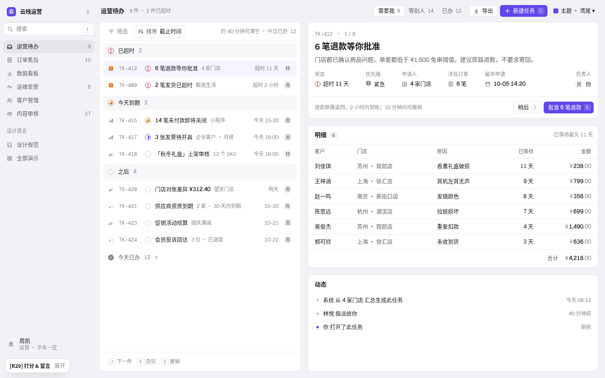
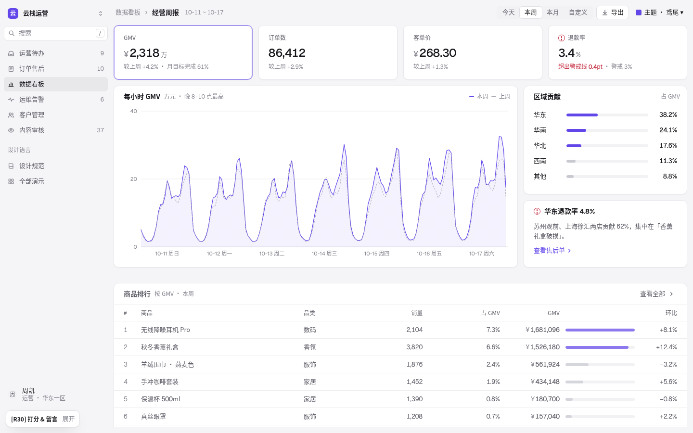
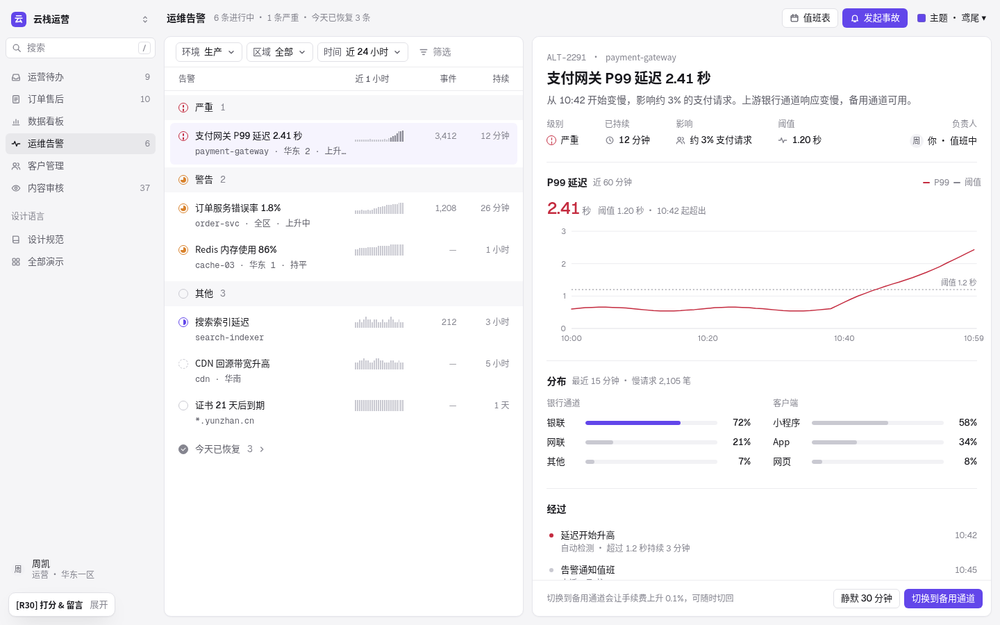
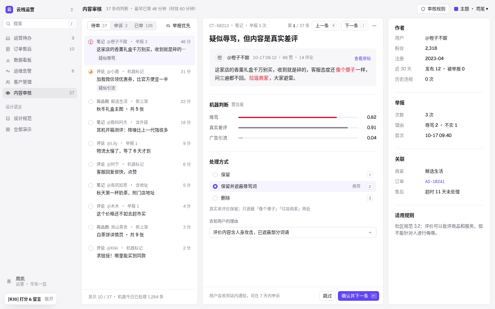
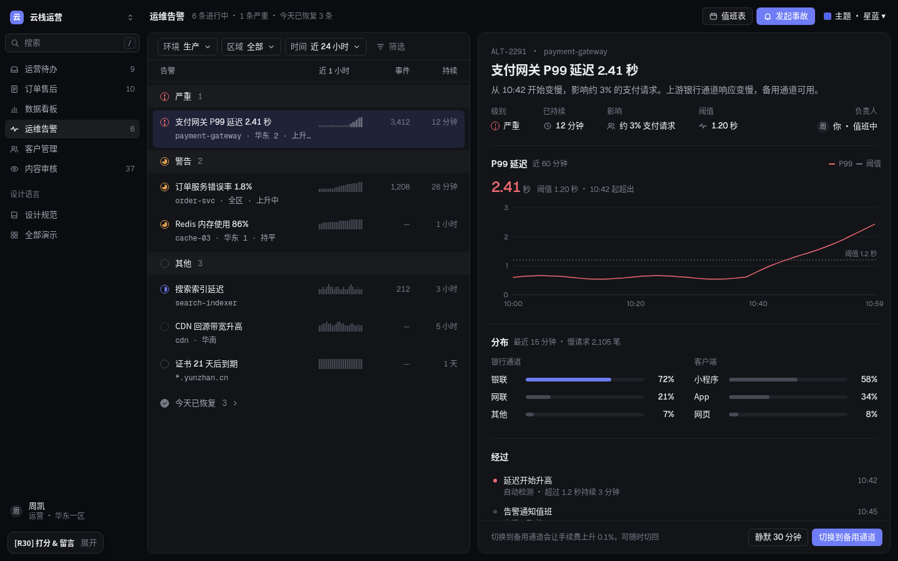

壳先于卡：只在需要分组的地方用面板。
R29「面板」在运营待办上得 60 分（R28 65），没有批注。R30 先诚实地找退步原因，再收敛：一个对象 = 一块面，同类并列才用卡，间距三级 20 / 12 / 32，画布更浅，首屏不表演。R29 做对的部分保留：看板的指标格页签和图表卡、抽屉、折叠、页签滑动、切换淡入、完整的「减少动态效果」。控件全平、鸢尾 + 7 套主题、Geist 数字、无衬线不变。

R29 为什么退步
注意：两次打分不在同一页。R28 的 65 分和批注（要面板、要动效）打在数据看板上；R29 的 60 分打在运营待办上，恰好是 R29 改得最伤的一页。我们把 r28 / r29 六页在同一状态下并排截图，并用脚本量化：
| 页 | 可见的面 R28 → R29 → R30 | 露出的画布 | 首屏完整行 |
|---|---|---|---|
| 运营待办 | 1 → 4 → 2 | 2% → 10% → 7% | R30 与 R29 相同 |
| 订单售后 | 1 → 5 → 5 | 2% → 9% → 11% | 20 → 16 → 17 |
| 数据看板 | 1 → 8 → 8 | 2% → 12% → 13% | 排行 7 → 7 → 6（区块间距 32） |
| 运维告警 | 1 → 5 → 2 | 2% → 10% → 8% | 11 → 10 → 11 |
| 客户管理 | 1 → 7 → 2 | 2% → 14% → 8% | — |
| 内容审核 | 1 → 8 → 3 | 2% → 14% → 8% | — |
并排对照（本项目自己的渲染）



案例补充（文字结论，截图不发布）
本轮补看「什么时候不该用卡」：Linear 当前版应用、Plain、Attio（官网首屏实拍的产品界面）、Tailwind Catalyst 订单详情 / 列表、shadcn sidebar-inset / dashboard-01 / tasks、Tremor Dashboard 与 Insights、GitHub 议题；并合并 2026-10-19 灵感记录（间距三级、卡壳先行、图片内描边、表格数值细节）。
演示 ↔ 参考
| 演示 | 参考模式 | 面板与动效 |
|---|---|---|
| 运营待办 | Linear 我的事项 + Catalyst 订单详情 | 左：列表面板，组头恢复贯穿色带，「今天已办」可展开。右：一块面讲一个任务——标题、属性、明细 / 清单、动态是同一块面里的分区（小标题 + 内缩线），操作条贴在底部。换任务时详情 160ms 淡入。 |
| 订单售后 | Stripe 发票列表 + 指标格 | 4 个紧凑指标格（数字和说明同一行）+ 一张表格卡，首屏 17 行；切页签出行骨架；点行滑出抽屉。 |
| 数据看板 | Stripe 指标格 + Vercel 图表卡 | 同类并列才用卡：4 个指标格（即图表页签）、图表卡、区域 / 提醒小卡、排行卡；排行与上方隔 32（区块间距）。首屏卡壳先行，只有内容区骨架。 |
| 运维告警 | Sentry 问题流 + Linear 事项详情 | 告警列表面板 + 一块面讲一条告警：概况、P99（先给结论数字）、分布、经过是分区，「切换到备用通道」贴底。 |
| 客户管理 | Linear 客户页 + Attio 右栏 | 主记录一块面（概况、需求、席位 + 动态并排），右栏一块面（联系人、合同、下一步）。 |
| 内容审核 | Plain 收件箱 + GitHub 议题 | 队列面板 / 中栏一块面（原文、机器判断、处理方式）/ 右栏一块面；J / K / 1–3 / Enter 流转，中栏右栏同步淡入。 |




令牌
R28 的文字、线、状态、图表令牌不变；R29 的卡片令牌保留，改了画布和间距。
| 令牌 | 值 | 用途 |
|---|---|---|
--pad | 20px | 面 / 卡片内边距、卡头左距、分区线内缩、面内表格左右 |
--gap | 12px | 同组面 / 卡之间、外边距 |
--sec | 32px | 不同区块之间（如看板的图表区 → 排行） |
.sheet | 白面 + 1px 描边 + 圆角 10 + 极淡投影 | 一个对象；内部分区 = 小标题 + 内缩线 + 间距；.cf 贴底 |
--r-card / --shadow-card | 10px / 0 1px 2px rgba(24,24,40,.045) | 不变；深色无投影 |
| 图片内描边 | outline 1px rgb(0 0 0 / .1)，offset −1px | 白底图片 / 头像不糊进白面；深色用白 10% |
删掉：卡片错开入场（R29 35ms × 12 张）；本地数据页面的首屏骨架和数字滚动。曲线不变：--ease-out .25,.46,.45,.94；--ease-in .4,0,1,1；--ease-move .32,.72,0,1。
面板规则 R1–R11
左边按 R30 规则渲染，右边是错误写法（多数就是 R29 的做法）。全部由本页 HTML 画出，不是截图。
R1 · 一个对象 = 一块面
6 笔退款等你批准
明细
动态
依据：R29 在运营待办得 60（R28 65）。并排诊断第 1 条（study/regression.md）；Linear 当前版、Plain、Catalyst 订单详情都是「一块面 + 分区」。
R2 · 同类并列才用卡
依据：shadcn dashboard-01 只有 KPI 和图表是卡，表格不进卡；GitHub 议题里每条评论是卡，右栏属性只用小标题 + 线。
R3 · 间距三级：卡内 20 › 卡间 12 ‹‹ 区块 32
依据：inspiration-log 2026-10-19（@MichaelFilipiuk 只改 5 个间距）；Catalyst 详情区块间距约 40、Tremor 48–64。测试：demo 面板间距 12、面内边距 20、看板排行区块间距 32。
R4 · 列表组头用贯穿色带
依据：R28 运营待办（65 分）用的就是贯穿色带；R29 改成内缩后分组变弱（诊断第 4 条）。测试：组头宽度 = 列表宽度。
R5 · 操作条贴在对象底部
依据：R28 的操作条在底部；R29 挪到第一张卡里。测试：#detail 的最后一个子元素是 .cf（运营待办、运维告警）。
R6 · 画布浅、露得少
依据：脚本量化（study/regression.md）：R28 2%、R29 9–14%、R30 7–8%（看板 13%、订单 11%）。
R7 · 卡片靠 1px 描边成形，投影几乎看不见
订单数
客单价
依据：Vercel、PostHog、Linear、shadcn、Tremor、Arco 都用 1px 浅线；只有 Ant 用无边框 + 极淡投影。cases.md 面板结论 2。
R8 · 状态颜色只给 14px 图标（沿用 R28）
依据：cases.md 面板结论 7：卡片要配上低噪音内容才干净（Ant Pro / Arco Pro 的问题在卡片内容）。
R9 · 控件仍然全平
依据：测试脚本逐个检查 .btn 的 box-shadow 与 background-image：6 页 × 2 主题均为平。
R10 · 图表卡先给结论数字，再给图
P99 延迟
P99 延迟
依据：Supabase 报表、Linear Insights：每个图表面板「标题 + 当前值 + 图」。
R11 · 表格数值细节
依据：inspiration-log 2026-10-19（Vercel AI Gateway 日志：等宽时间、ID 中间省略、金额固定小数右对齐、「+2 more」）。
动效规则 M1–M7
每一对都是活的：点按钮、悬停或点组头即可看到差别。系统开启「减少动态效果」时，正确写法全部变成瞬时切换。
M1 · 页签 / 分段：160ms 滑动
M2 · 悬停只改底色
M3 · 展开收起：240ms 高度过渡
M4 · 抽屉：从右侧滑入，退出更快
M5 · 骨架屏形状和内容一致，只在真等待时
GMV
GMV
M6 · 数字只在变化时动一次
M7 · 首屏不表演
减少动态效果
CSS 层：@media (prefers-reduced-motion: reduce) 把所有动画、过渡的时长和延迟归零。JS 层：跳过骨架、数字直接终值、图表不播放入场、抽屉直接到位。测试在该模式下检查 document.getAnimations() 没有运行中的动画。
主题
保留全部主题：鸢尾（默认）、钴蓝、湖蓝、石墨、晴窗、珊瑚和深色「星蓝」（midnight）。亮色主题画布都比 R29 提亮一档；深色画布 #0B0C0F、面 #131418、描边 #23252B、无投影。

复核记录
先诊断（r28 ↔ r29 六页），再每页多轮并排（r29 ↔ r30 全图、星蓝、1280、其余主题、减少动态效果、2 倍局部、交互状态）。
| 轮次 | 发现 | 改动 |
|---|---|---|
| 0 · 诊断 | 见上文「R29 为什么退步」。 | 定方向：一个对象一块面、同类并列才成卡、间距三级、画布提亮、首屏不表演。 |
| 1 · r29 ↔ r30 全图 | 面内表格贴边而分区线内缩，两种宽度打架；合计行上下两条线；右栏第一个标题离顶太近。 | 面内表格内缩 20；合计行去上线；右栏首标题 +8。 |
| 2 · 星蓝 + 1280 | 星蓝画布变成了浅色（R30 画布令牌写在星蓝之后覆盖了它）；1280 下「负责人」单独掉到第二行右端。 | 重申星蓝画布；属性行列距随宽度收紧，窄屏负责人左对齐。 |
| 3 · 量化 + 眯眼 | R30 眯眼是两块清楚的面 + 可见组头；R29 是四块碎面。看板排行因区块间距少露 1 行。 | 保留区块间距（分组优先）。 |
| 4 · 主题 + 减少动态效果 | 4 套亮色主题结构一致；RM 下 60ms 即终态。 | 无。 |
| 5 · 2 倍局部 | 小标题、属性、表头左缘同一条线；分区线与表格行线同宽。 | 无。 |
| 6 · 交互状态 | 抽屉、展开已办、带清单的任务、本月 × 退款率均正常，无 JS 错误。 | 无。 |
验收清单
- 队列 / 记录页：列表一块面 + 对象一块面（+ 右栏一块面）；对象内部分区没有边框和投影（测试）。
- 只有同类并列的东西是卡：指标格、看板图表 / 排行。
- 间距：面内 20、面间 12、区块 32（测试）。
- 列表组头是贯穿色带（测试：宽度 = 列表宽）。
- 操作条在对象底部、滚动贴底（测试）。
- 画布 #F5F5F7；队列 / 记录页露出 ≤ 8%。
- 首屏：本地数据页面无骨架、无入场；看板卡壳先行、只有内容区骨架（测试）。
- 动效只回应操作：悬停 100、页签 160、展开 240、抽屉 280 / 240ms、切换淡入 160ms。
- 减少动态效果：无运行中动画、直接终值（测试）。
- 控件全平；字号 12 / 13 / 14 / 20 / 24；Geist 数字；无衬线；状态只给图标上色。
- 7 套主题结构一致；1280 / 1440 无横向滚动、无遮挡、无截断（测试）。